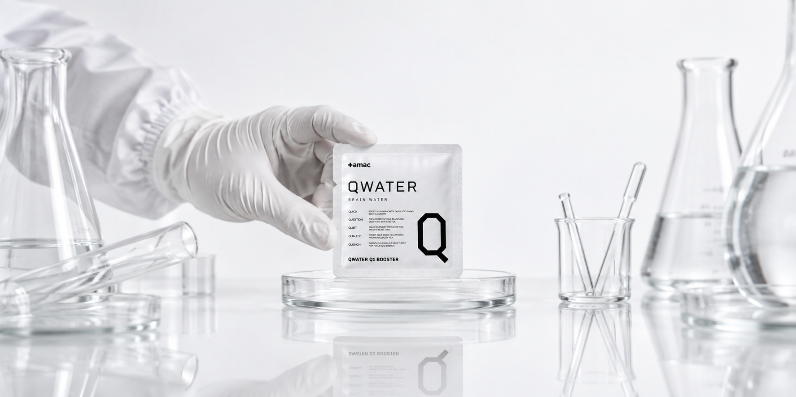
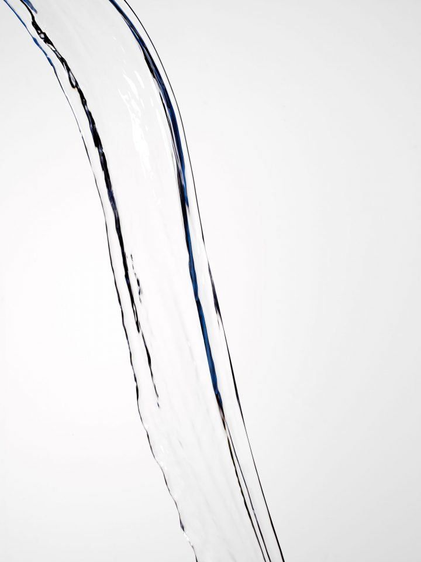
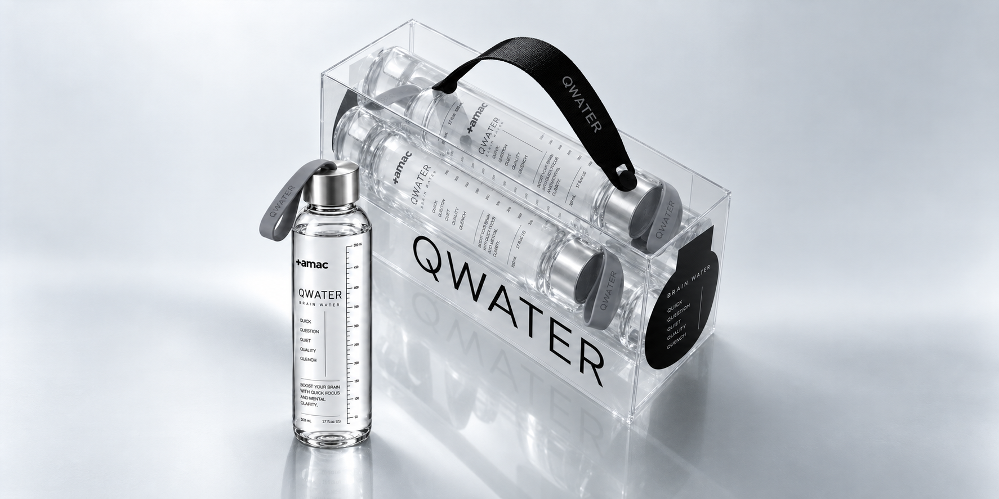
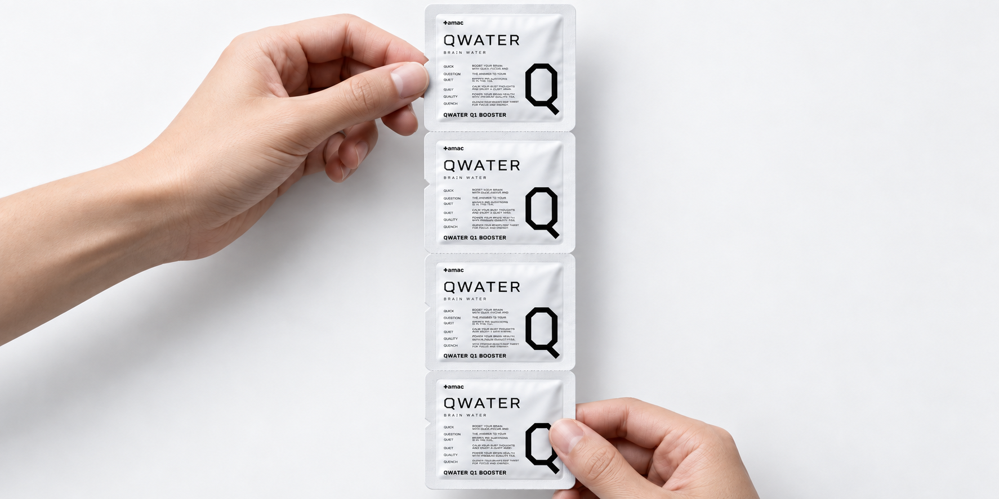
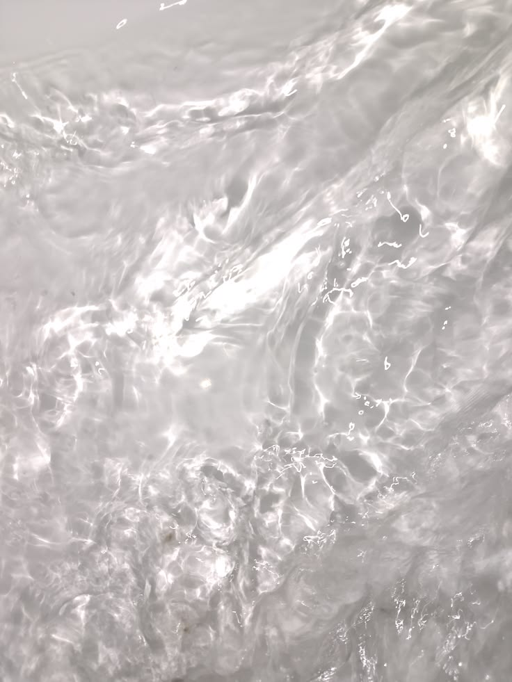
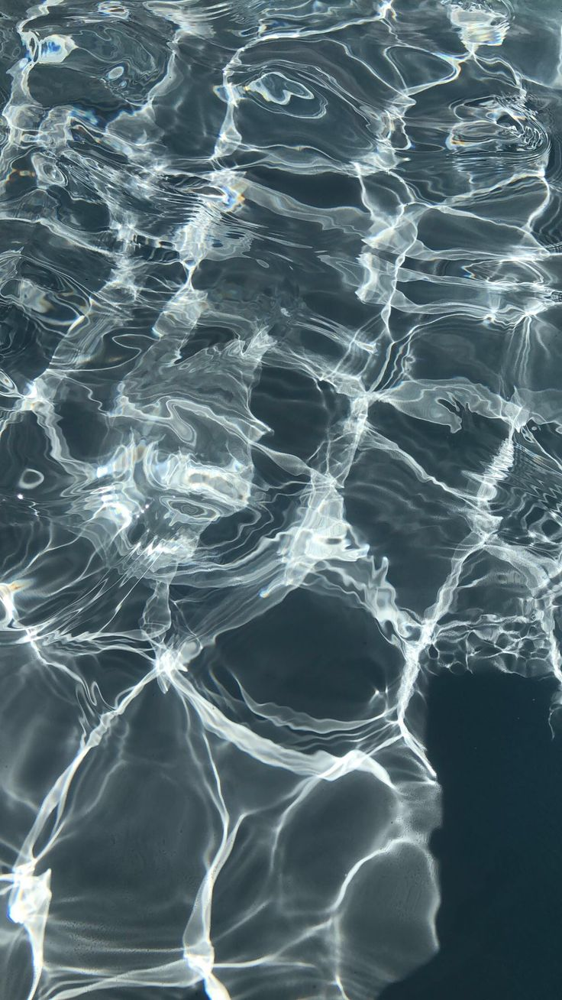
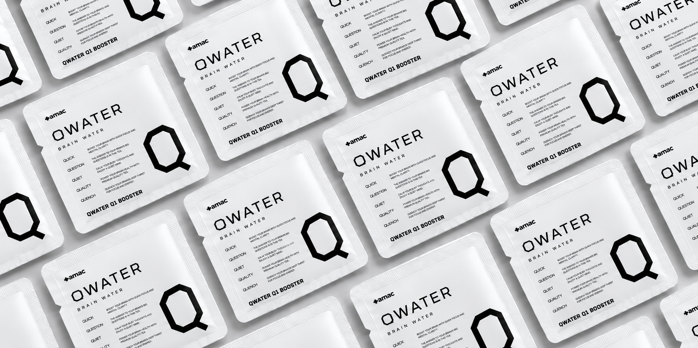

Q1 IS NOT
DOPAMINE WATER.
Q1은 도파민을 만들어낸다는 과장된 약속을 하지 않습니다.
AMAC가 공개하는 것은 실제 성분과 정확한 양, 그리고 확인 가능한 근거입니다.
느낌보다 근거를 먼저 보여주는 것이 Q1의 방식입니다.
Q1 does not make exaggerated promises about creating dopamine.
AMAC shows you the actual ingredients, precise amounts and evidence that can be checked.
Evidence before sensation. That is the Q1 approach.

WHY WE LEFT
OUT L-DOPA.
강한 이름의 성분이 항상 좋은 소비재 원료는 아닙니다.
AMAC는 건강한 성인의 일상용 제품에 필요한 근거와 안전성을 우선합니다.
넣을 수 있는 것보다 넣지 말아야 할 것을 판단하는 것도 포뮬러입니다.
An impressive-sounding ingredient is not automatically the right ingredient for an everyday product.
AMAC prioritizes evidence and safety appropriate for routine use by healthy adults.
Knowing what to leave out is part of formulation too.

WE DON'T HIDE
THE CAFFEINE.
'천연 에너지'라는 말 뒤에 카페인을 숨기지 않습니다.
Q1은 최종 카페인 함량을 명확하게 표시합니다.
소비자는 자신이 무엇을 얼마나 마시는지 알아야 합니다.
We do not hide caffeine behind vague phrases such as "natural energy."
Q1 clearly states its final caffeine content.
You deserve to know what you are drinking and how much of it is there.

75 MG. DESIGNED,
NOT MAXED.
Q1의 목표는 가장 강한 자극이 아닙니다.
낮 시간 루틴에 사용할 수 있는 관리 가능한 수준을 먼저 설계합니다.
숫자가 클수록 좋은 제품이라는 경쟁에서 벗어납니다.
Q1 was not designed to deliver the strongest possible stimulation.
It starts with a manageable amount intended for a daytime routine.
We refuse to treat a bigger number as automatically better.
WHY
RHODIOLA.
홍경천추출물은 국내 건강기능식품에서 '스트레스로 인한 피로 개선에 도움을 줄 수 있음'이라는 기능성이 인정되어 있습니다.
Q1은 검증하기 어려운 신경전달물질 이야기가 아니라 인정된 범위에서 출발합니다.
과학은 큰 표현보다 정확한 경계에서 신뢰를 얻습니다.
Rhodiola extract is recognized in Korea for its potential to help improve fatigue caused by stress.
Q1 begins with recognized functionality rather than difficult-to-substantiate claims about neurotransmitters.
Science earns trust through clear boundaries, not bigger words.

B6. NO MORE
THAN ITS ROLE.
비타민 하나를 기적의 집중 성분처럼 표현하지 않습니다.
B6는 단백질 및 아미노산 이용과 정상적인 호모시스테인 수준 유지 등에 필요한 영양성분입니다.
AMAC는 영양소의 실제 역할을 확대해석하지 않습니다.
We do not turn a vitamin into a miracle focus ingredient.
Vitamin B6 plays recognized nutritional roles, including protein and amino-acid metabolism and the maintenance of normal homocysteine levels.
AMAC does not exaggerate what nutrients do.

TAURINE IS
NOT THE HERO.
Q1에는 타우린이 들어가지만 모든 성분을 주인공으로 만들 필요는 없습니다.
기능이 분명한 축과 포뮬러를 보완하는 축을 분리합니다.
성분 수보다 설계의 논리가 중요합니다.
Q1 contains taurine, but not every ingredient needs to become the headline.
We distinguish the primary functional axis from ingredients that support the overall formula.
Logic matters more than the length of the ingredient list.

ELECTROLYTES
ARE NOT MAGIC.
나트륨과 칼륨을 넣는다고 물이 특별한 치료제가 되는 것은 아닙니다.
Q1은 정량의 전해질을 물 기반 포뮬러의 일부로 사용합니다.
과장하지 않는 것이 오래가는 과학입니다.
Adding sodium and potassium does not turn water into a treatment.
Q1 uses measured electrolytes as part of a water-based formula.
Science lasts longer when it is not exaggerated.